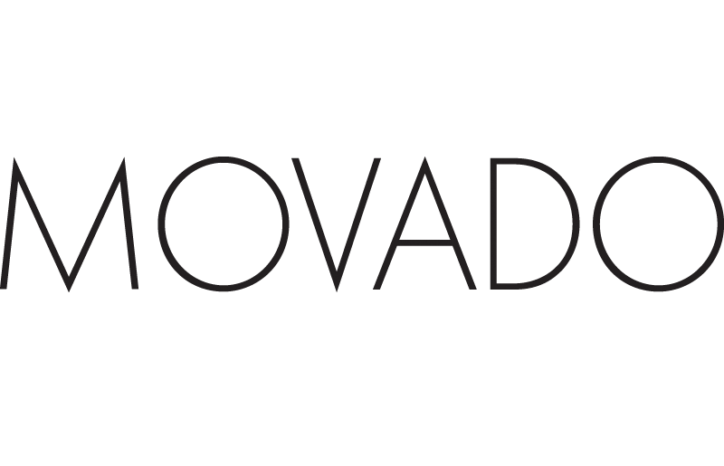
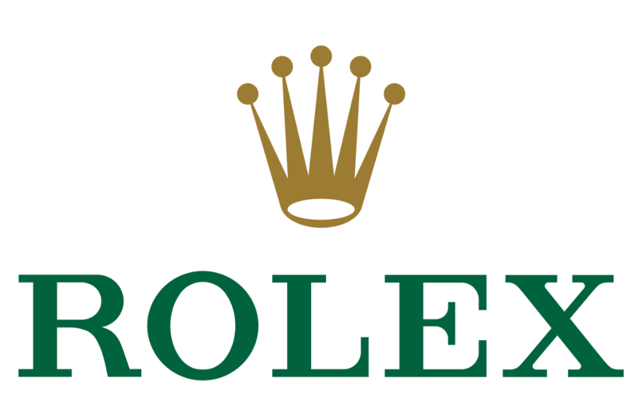
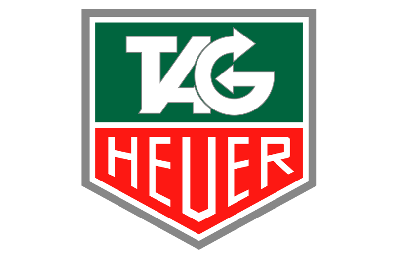

Movado
Movado was founded as LAI Ditescheim & Freres SA in 1881 in La Chaux-de-Fonds, Switzerland, by Léopold Achille Isidore Ditesheim. In 1983, the company was purchased by Gedalio Grinberg, a Cuban-born Jew, who fled Fidel Castro's Marxist Revolution in 1960 with his family.
His son, Efraim Grinberg, is the Chairman and Chief Executive Officer of Movado Group, Inc. The North American President of Movado is Alan Chinich. In 2006, Movado celebrated its 125th year of watchmaking.
On February 23, 1999, Movado Group, Inc. completed the sale of Piaget business to VLG North America, Inc., for approximately $30 million.
Rolex
Rolex fue fundada en 1905 por Hans Wildorf y Alfred Davis, su cuñado.5 Contradiciendo la creencia popular, Hans Wilsdorf no era suizo y tampoco era un relojero. Wilsdorf & Davis fue el nombre original de lo que después se convirtió Rolex Watch Company. Hans Wilsdorf junto con Michael Hickman registran la marca Rolex, en La Chaux-de-Fonds, Suiza, en 1908.
Los primeros relojes pulsera de Wilsdorf y Davis generalmente se marcaban como "W & D" en el interior de la tapa, estos mismos se vendían a joyeros que a su vez marcaban en el dial de los relojes sus propios nombres.
El director general de Rolex fue Patrick Heininger desde 19925 aunque renunció abruptamente en diciembre de 2008 por "razones personales", a esto siguió una negación por parte de la empresa después de haber perdido mil millones de francos suizos (aproximadamente 574 millones de libras esterlinas, 900 millones de dólares) invertidos con Bernard Madoff quien era el estadounidense administrador de activos el cual se declaró culpable del fraude Ponzi por un aproximado de 30 000 millones de libras en todo el mundo.
Montres Tudor SA ha diseñado, fabricado y comercializado relojes marca Tudor desde 1946. Wildorf concibe el reloj Tudor como un producto que ofrece la fiabilidad y seguridad de un Rolex, pero a un precio más bajo y para ser distribuido en los puntos de venta autorizados de Rolex, tiempo después, en 2004, Montres Tudor SA interrumpió la venta de la marca Tudor en los Estados Unidos.


TAG Heuer
La compañía fue fundada en 1860 por Edouard Heuer en St-Imier, Suiza. Su primer cronógrafo fue patentado en 1882, y en 1887 Heuer patenta el "piñón oscilante", aún usado en cronógrafos mecánicos. En 1911 Heuer patenta el primer cronógrafo de a bordo para automóviles y aviación, el "Time of Trip". En 1914 presenta su primer cronógrafo de pulsera y en 1916 presenta el Micrograph, el primer cronógrafo que mediría centésimas de segundo. Las Olimpiadas de Amberes, París y Ámsterdam se cronometran con instrumentos de la firma.
En 1932 presenta el "Autavia", un cronógrafo para AUTomóviles y AVIAción, que acabaría siendo una importante línea en la marca. También entre 1935 y 1940 harían cronógrafos para pilotos de la Luftwaffe, conocidos como "Flieger". Acabada la guerra, hicieron modelos con triple calendario (día, fecha y mes). En 1958 harían nuevas series de relojes de tablero, que estuvieron en producción hasta la década de los '80. También harían instrumentos para cronometrar pruebas deportivas como esquí o pruebas de motor, incluyendo Fórmula 1.
 Cart
Cart